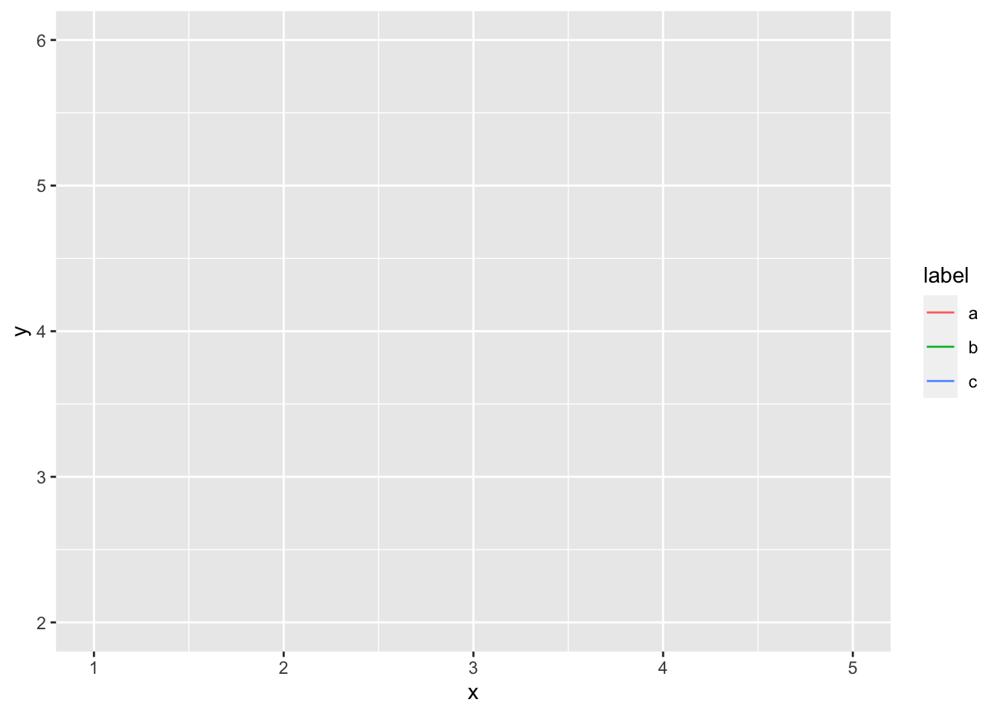
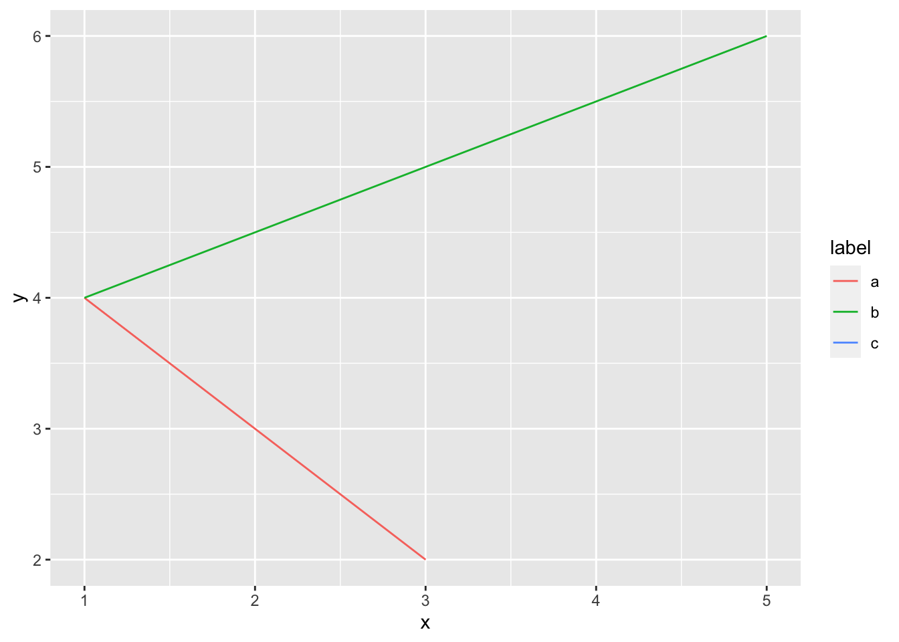
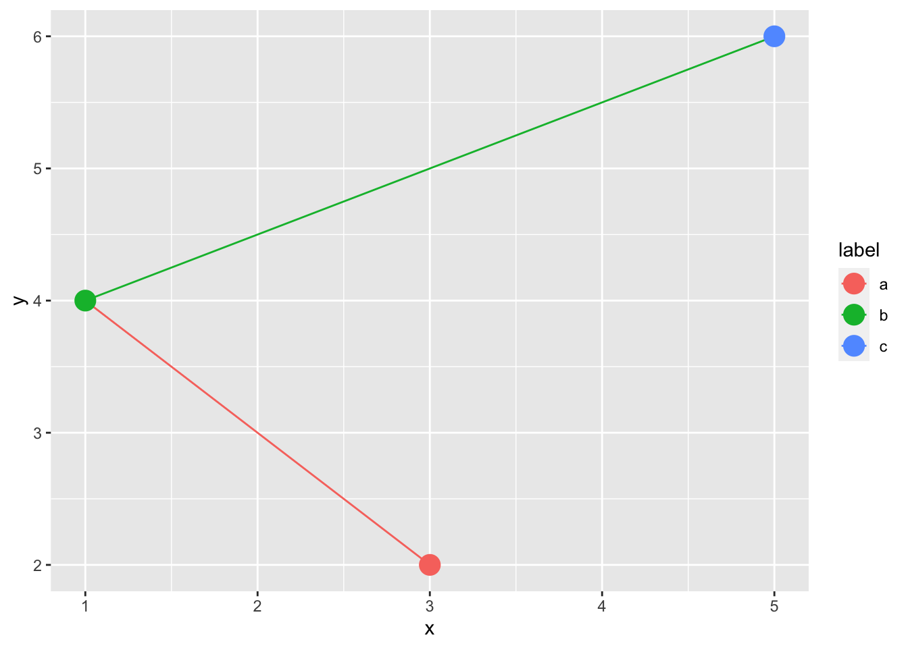
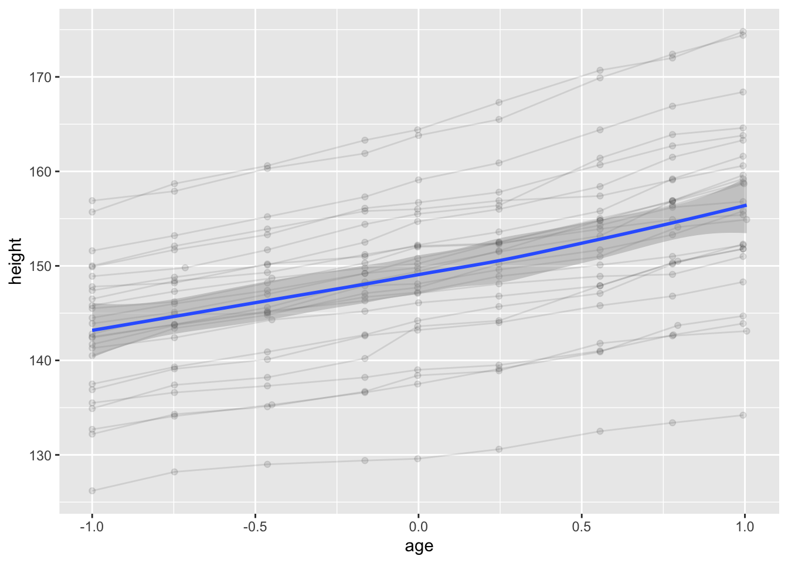
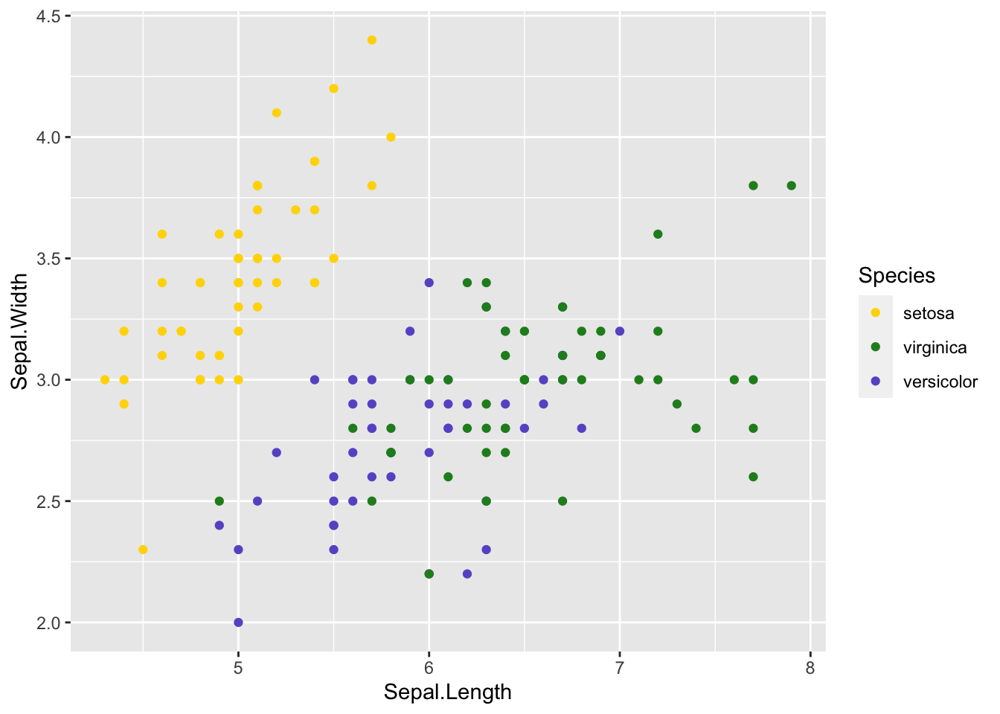
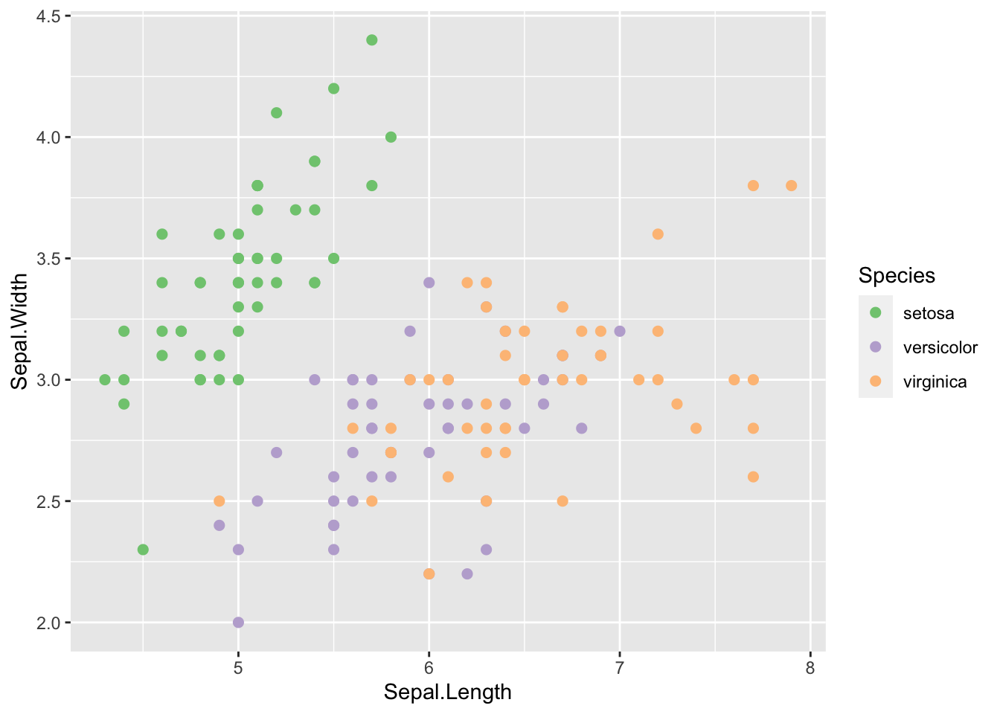
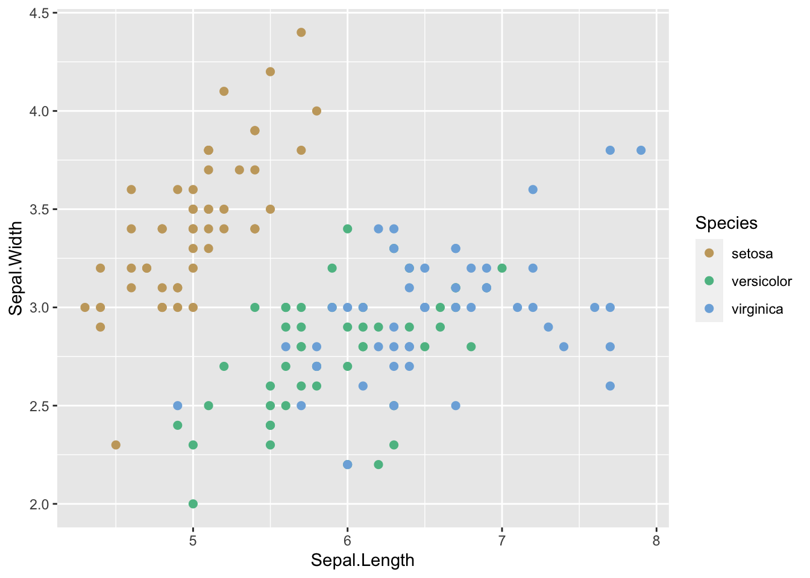
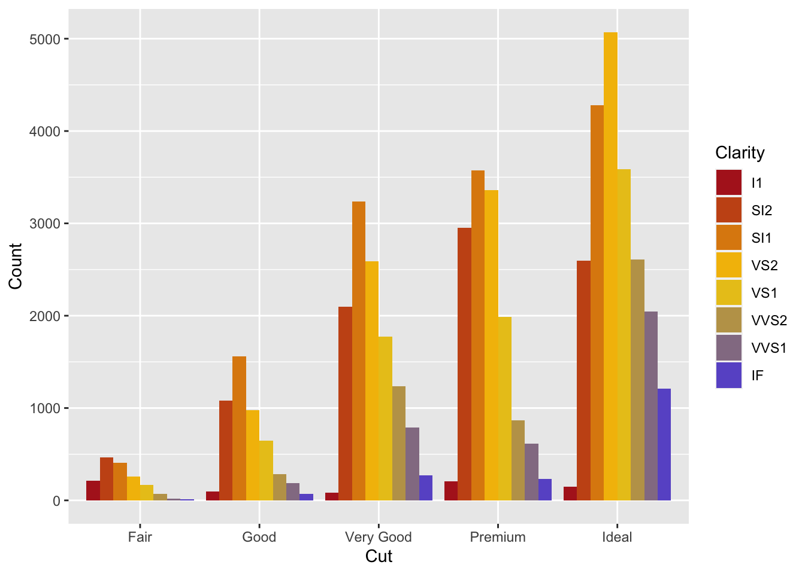
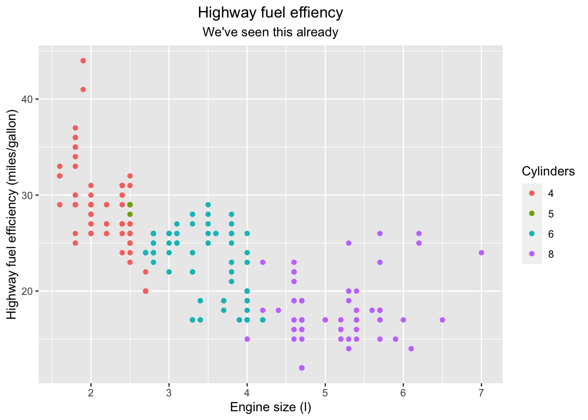

12_advanced_plotting_the_grammar_of_graphics_scratchpad.R
Advanced plotting
library(tidyverse)## ── Attaching packages ────────────────────────────────────────────────────────────────────────────────────── tidyverse 1.3.1 ──## ✔ ggplot2 3.3.5 ✔ readr 2.0.2
## ✔ tibble 3.1.5 ✔ dplyr 1.0.7
## ✔ tidyr 1.1.4 ✔ forcats 0.5.1## ── Conflicts ───────────────────────────────────────────────────────────────────────────────────────── tidyverse_conflicts() ──
## ✖ dplyr::filter() masks stats::filter()
## ✖ dplyr::lag() masks stats::lag()Implicit and explicit grouping
First, we create a simple example dataset.
geom_df <- tribble(
~x, ~y, ~label,
3, 2, "a",
1, 4, "b",
5, 6, "c"
)
geom_df## # A tibble: 3 × 3
## x y label
## <dbl> <dbl> <chr>
## 1 3 2 a
## 2 1 4 b
## 3 5 6 cIf we initialise a plot with x, y, and map the label to the colour, and try to add a path layer, we will get a warning.
ggplot(geom_df, aes(x, y, colour = label)) +
geom_path()## geom_path: Each group consists of only one observation. Do you need to adjust
## the group aesthetic?
The reason for this is that since the label is a categorical variable, it will define groups in the data, and every group now only consists of a single observation. As you understand, we need at least two observations in each group in order to be able to draw a line.
A way of solving this is to set the grouping variable explicitly in geom_path. If we set that to a constant value, this will be applied to the whole dataset, and it will be considered a single group. It doesn’t matter what the value is, but by setting it to 1, we could read it as “there is 1 group in the data, i.e. all observations.”
ggplot(geom_df, aes(x, y, colour = label)) +
geom_path(group = 1)
Even though we specified three colours, only two of the lines are coloured. Since each line segment is built by two observations, ggplot has to decide which one of these observations should define the colour of the line. By default, this is decided by the first point in the line segment.
If we plot points in addition to the line, we see that all of them will be represented since each observation is mapped to a colour of its own, rather than two observations being mapped to two different colours, as in the case of the line.
ggplot(geom_df, aes(x, y, colour = label)) +
geom_path(group = 1) +
geom_point(size = 5)
The following plot just illustrates the difference between geom_path and geom_line. geom_path will plot a line where the order of the line segments is decided by the order in the data. geom_line, on the other hand, will draw the line from left to right, and ignore the order of the observations in the original tibble.
ggplot(geom_df, aes(x, y, colour = label)) +
geom_line(group = 1)Finally, setting the colour of a more complex collective geom, such as a polygon, is a bit more tricky. In this particular case, we can see that the colour gets defined by the first point in the data.
ggplot(geom_df, aes(x, y)) +
geom_polygon(aes(colour = label), group = 1, size = 3)
Summarising geoms
Here’s a different example of grouping using a slightly more complex dataset. The data contains ages and heights of 26 boys that was recorded at nine different occasions. In the plot below, we visualise the height of the boys as they age, and we connect the dots belonging to the same boy (Subject). We set the group to be Subject in order to get the lines that we expect. On top of this, we add a summary of the data with geom_smooth, but in order for this to become a summary of all our data points, and not only for the groups we have previously defined, we set group to constant.
data(Oxboys, package = "nlme")
ggplot(Oxboys, aes(age, height, group = Subject)) +
geom_line(alpha = 0.1) +
geom_point(alpha = 0.1) +
geom_smooth(group = 1)## `geom_smooth()` using method = 'loess' and formula 'y ~ x'
Colour palettes
If we want to customise what colour scale that we use for our plots, we have a couple of different options.
Setting the colours manually
This is probably the most tedious way, but also the way where we have complete control over what colours are used.
ggplot(iris, aes(Sepal.Length, Sepal.Width, colour = Species)) +
geom_point() +
scale_colour_manual(values = c(setosa = "gold",
virginica = "forestgreen",
versicolor = "slateblue"))
or
ggplot(iris, aes(Sepal.Length, Sepal.Width, colour = Species)) +
geom_point() +
scale_colour_discrete(type = c(setosa = "gold",
virginica = "forestgreen",
versicolor = "slateblue"))Using a pre-defined palette
ggplot2 includes palettes from the RColorBrewer package that can be accessed with scale_*_brewer. In the example below, we’re using this for the colour aesthetic, but we could also use it for fill.
ggplot(iris, aes(Sepal.Length, Sepal.Width, colour = Species)) +
geom_point(size = 2) +
scale_colour_brewer(type = "qual")
We can display all the RColorBrewer palettes like this
RColorBrewer::display.brewer.all()
colorspace package
We can list the palettes that are available in colorspace:
colorspace::hcl_palettes()## HCL palettes
##
## Type: Qualitative
## Names: Pastel 1, Dark 2, Dark 3, Set 2, Set 3, Warm, Cold, Harmonic, Dynamic
##
## Type: Sequential (single-hue)
## Names: Grays, Light Grays, Blues 2, Blues 3, Purples 2, Purples 3, Reds 2,
## Reds 3, Greens 2, Greens 3, Oslo
##
## Type: Sequential (multi-hue)
## Names: Purple-Blue, Red-Purple, Red-Blue, Purple-Orange, Purple-Yellow,
## Blue-Yellow, Green-Yellow, Red-Yellow, Heat, Heat 2, Terrain,
## Terrain 2, Viridis, Plasma, Inferno, Rocket, Mako, Dark Mint,
## Mint, BluGrn, Teal, TealGrn, Emrld, BluYl, ag_GrnYl, Peach,
## PinkYl, Burg, BurgYl, RedOr, OrYel, Purp, PurpOr, Sunset,
## Magenta, SunsetDark, ag_Sunset, BrwnYl, YlOrRd, YlOrBr, OrRd,
## Oranges, YlGn, YlGnBu, Reds, RdPu, PuRd, Purples, PuBuGn, PuBu,
## Greens, BuGn, GnBu, BuPu, Blues, Lajolla, Turku, Hawaii, Batlow
##
## Type: Diverging
## Names: Blue-Red, Blue-Red 2, Blue-Red 3, Red-Green, Purple-Green,
## Purple-Brown, Green-Brown, Blue-Yellow 2, Blue-Yellow 3,
## Green-Orange, Cyan-Magenta, Tropic, Broc, Cork, Vik, Berlin,
## Lisbon, Tofino… but we can also launch an interactive application for choosing an appropriate colour scale with the function colorspace::hcl_wizard().
Once we know what palette we want, we can define it using the scale_* functions from colorspace:
ggplot(iris, aes(Sepal.Length, Sepal.Width, colour = Species)) +
geom_point(size = 2) +
colorspace::scale_colour_discrete_qualitative("Harmonic")
These functions are named according to the scheme scale_<aesthetic>_<datatype>_<colourscale>(), <aesthetic> is the name of the aesthetic we want to affect (color or fill), <datatype> is the datatype of the variable that is mapped to the asesthetic (continuous or discrete), and <colourscale> is the type of the palette we want to use (qualitative, sequential, diverging).
Defining our own palette
We can use the function colorRampPalette for creating a colour palette of our own. It takes a vector of colours as the input, and it returns a function. The returned function in turn takes a single argument, which is the number of colours you would like to fetch from the palette you have defined.
Let’s do this in a couple of steps. First we create our palette function.
my_palette <- colorRampPalette(c("firebrick", "gold", "slateblue"))my_palette is now a function that accepts a single number, which is the number of colors we want. The colours it generates will be on a continuous gradient from firebrick via gold to slateblue.
my_palette(5)## [1] "#B22222" "#D87C11" "#FFD700" "#B49866" "#6A5ACD"We can then use this in scale_*_manual. In this particular case, we want to modify the fill aesthetic, so we use the scale_fill_manual function.
diamond_cuts <- ggplot(diamonds, aes(cut, fill = clarity)) +
geom_bar(position = "dodge") +
scale_fill_manual(values = my_palette(8)) +
labs(x = "Cut",
y = "Count",
fill = "Clarity")
diamond_cuts
For more information on how to use colours in ggplot2, check out the chapter on colour scales in the ggplot2 book.
Labels
Adding the labs function to a ggplot we can adjust our labels. This function accepts any key = value pair, and the key’s in this case should be aesthetics in the plot, e.g. x, y, colour, fill, etc. x and y will by default modify the axis labels, while others will typically modify the legend titles. It also takes the arguments title and subtitle for adding titles to a plot. This example also shows how you could center the title of the plot.
ggplot(mpg, aes(displ, hwy, colour = factor(cyl))) +
geom_point() +
labs(x = "Engine size (l)",
y = "Highway fuel efficiency (miles/gallon)",
colour = "Cylinders",
title = "Highway fuel effiency",
subtitle = "We've seen this already") +
theme(plot.title = element_text(hjust = 0.5),
plot.subtitle = element_text(hjust = 0.5))
Saving plots to disk
We can save ggplots by using the function ggsave. By default, if we call ggsave with just the name of the file where we’d like to save the plot, it will use the last plot that was generated by ggplot2. In this case it will be the diamond_cuts plot.
diamond_cutsggsave("~/Desktop/diamond_cuts.png")## Saving 7 x 5 in imageWe can also specify which plot we want to save with the plot argument.
ggsave("~/Desktop/diamond_cuts.png", plot = diamond_cuts)## Saving 7 x 5 in imageOften we want to adjust the dimensions of the plot that we save. We can do this by changing the width and height arguments. The default unit of these are inches.
ggsave("~/Desktop/diamond_cuts.png",
width = 6, height = 4)We can change the units with the units argument.
ggsave("~/Desktop/diamond_cuts.png",
width = 15, height = 8, units = "cm")Further, we can also play with the resolution of the figure with the dpi argument. DPI is an abbreviation for dots per inch, and comes from the printing world. A higher value means higher resolution.
ggsave("~/Desktop/diamond_cuts.png",
width = 6, height = 4, dpi = 72)A higher resolution is generally preferred if we want to print our figures. If we are only showing them on a screen, we can get away with a lower resolution. Also, higher resolution → larger files.
Another thing to consider is whether going for a raster format (i.e. pixel graphics such as PNG), or for a vector format (such as PDF, EPS, or SVG). Generally, raster formats are good for viewing on a screen, while vector formats are good for printing, since the resolution is infinite (thus the dpi argument does not apply to vector formats). ggsave will figure out the format based on the file extension of the plot that you are saving, but you can also specify it explicitly with the device argument.
ggsave("~/Desktop/diamond_cuts.pdf",
plot = diamond_cuts,
width = 6, height = 4)
ggsave("~/Desktop/diamond_cuts.eps",
plot = diamond_cuts,
device = "eps",
width = 6, height = 4)One caveat with vector formats is that every single element in a plot will become an object in the figure, regardless of whether we can see it or not. This means that saving a vector image of a scatter plot containing two million points might be a bad idea. It will be slow, and the resulting file will be huge. In cases like this it’s better to go with a raster format.
As always check the documentation (?ggsave) for more information.